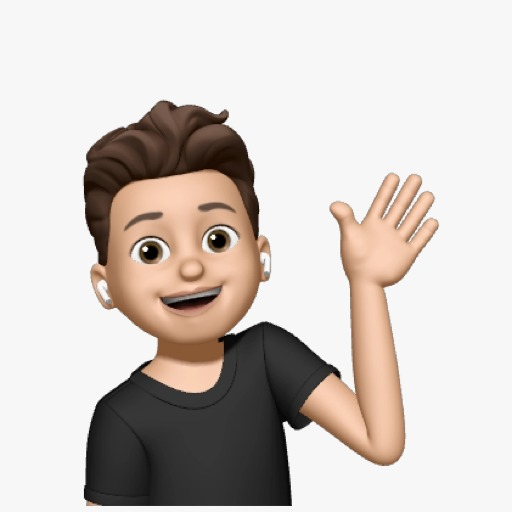

CAMILO LOPEZ
GABRIEL BARRERA
NATALIA ACOSTA

JAIDER MORALES

-Crear un aplicativo que permita la atención veterinaria remota por medios audiovisuales
-Estructurar el desarrollo de la solución planteada orientado a las buenas prácticas (MVC).
-Implementar patrones según la estructura tecnológica.
-Adquirir dominio y hosting web en el cual desplegar el desarrollo y sus parametrizaciones


At the beginning of the decade, we have had to face difficulties due to the pandemic, for this reason, we have put all of our technology on the market to achieve the virtualization of massive activities that would generate a great risk for the spread of the new coronavirus, which has opened a large window to the solution and optimization of many of our morning processes which we feared would be affected in a matter of time and normal delays of a face-to-face process and that through the new technologies can be carried out remotely from our homes.
Currently, digital media are the solution for many of our problems, but when it comes to our animals, a few virtual tools are very helpful. The idea of a virtual tool that helps with the care of our animals, in general, is proposed. One of these procedures is the veterinary care, which is a large part of the visits can take up more than half a day, in the case of an emergency, more than a whole day, which subjects us to a large part of a lost of time between certain processes. and waiting times, now with the new technologies and the implementation of virtual systems we could reduce the diagnosis time in case of emergencies and carry out general consultations more easily from our own home through audiovisual ways.